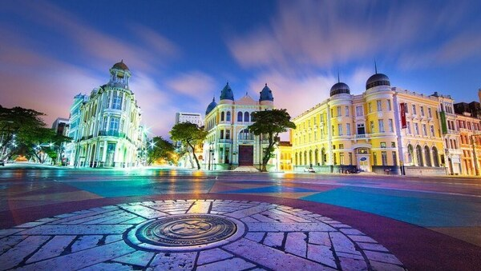
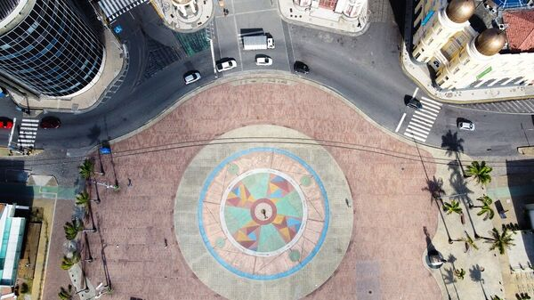
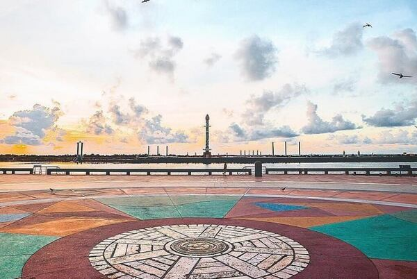
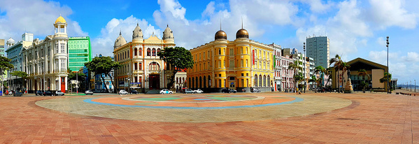
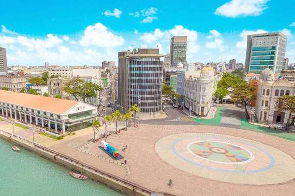

Introdução
O Marco Zero, localizado no Recife Antigo, é mais do que um ponto geográfico; é um símbolo de origem e identidade para a cidade de Recife, Pernambuco. Este ponto turístico não apenas marca o início das distâncias das estradas estaduais, mas também oferece uma experiência cultural rica e uma vista deslumbrante do Rio Capibaribe.
Contexto Histórico
Para compreender verdadeiramente a importância do Marco Zero, é crucial explorar o contexto histórico que o envolve. Este marco não é apenas uma referência geográfica, mas uma testemunha silenciosa das transformações pelas quais a cidade passou ao longo dos anos.
Arquitetura e Escultura
A escultura no Marco Zero, uma obra-prima do renomado artista Francisco Brennand, não é apenas um monumento, mas uma expressão artística que convida os visitantes a mergulharem na rica cultura pernambucana. Esta seção explora a arquitetura e os detalhes da escultura que tornam o Marco Zero tão distintivo.
Vista Panorâmica e Atmosfera
Localizado às margens do Rio Capibaribe, o Marco Zero oferece uma vista panorâmica espetacular. Esta seção destaca a atmosfera única do local, especialmente durante o pôr do sol, quando a praça ao redor ganha vida com moradores e turistas que se reúnem para apreciar a beleza natural.
Exploração do Entorno
O Marco Zero não é apenas um ponto isolado; é o ponto de partida para uma exploração mais ampla do Recife Antigo. Aqui, os visitantes podem descobrir inúmeros bares, restaurantes e lojas de artesanato, criando uma experiência completa que combina história, cultura e gastronomia.
Passeios Turísticos
Além de ser um local de contemplação, o Marco Zero também serve como ponto de partida para diversos passeios turísticos pela cidade. Seja de barco pelos canais, a pé pelas ruelas históricas ou explorando os museus próximos, esta seção destaca as opções de passeios que emanam do epicentro do Recife Antigo.